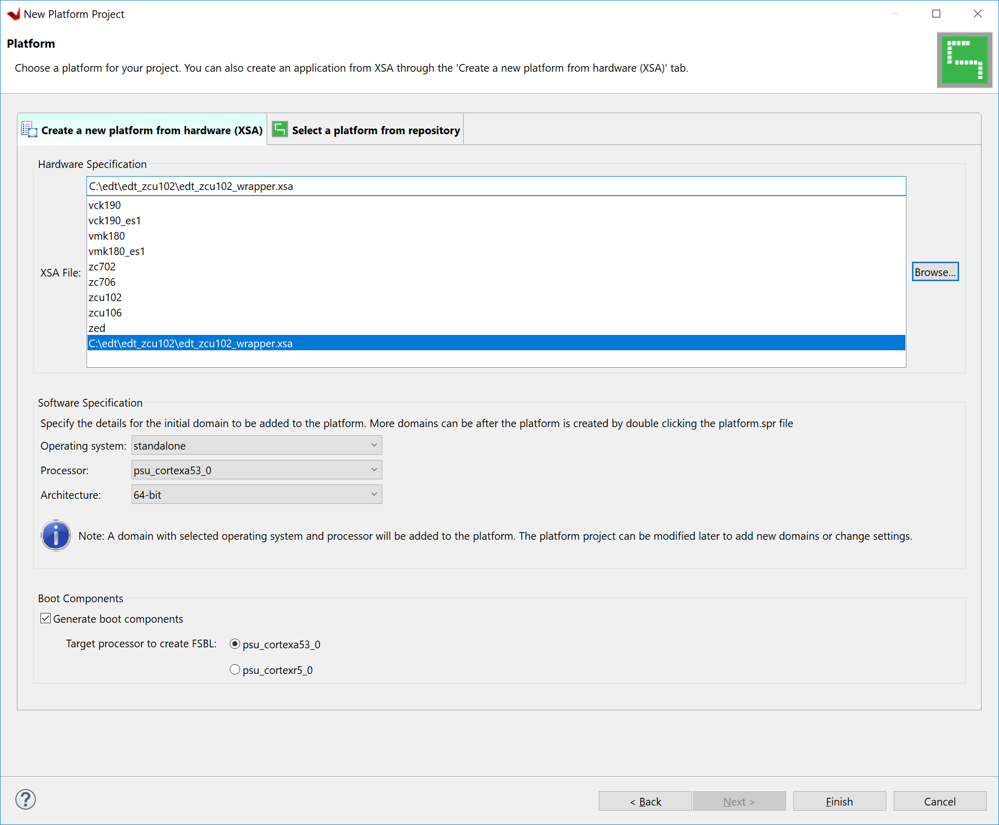
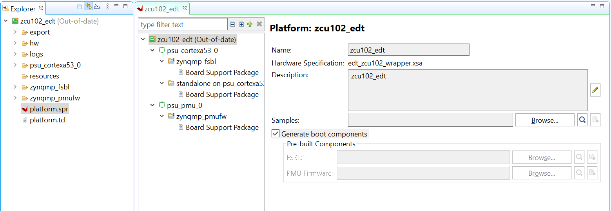
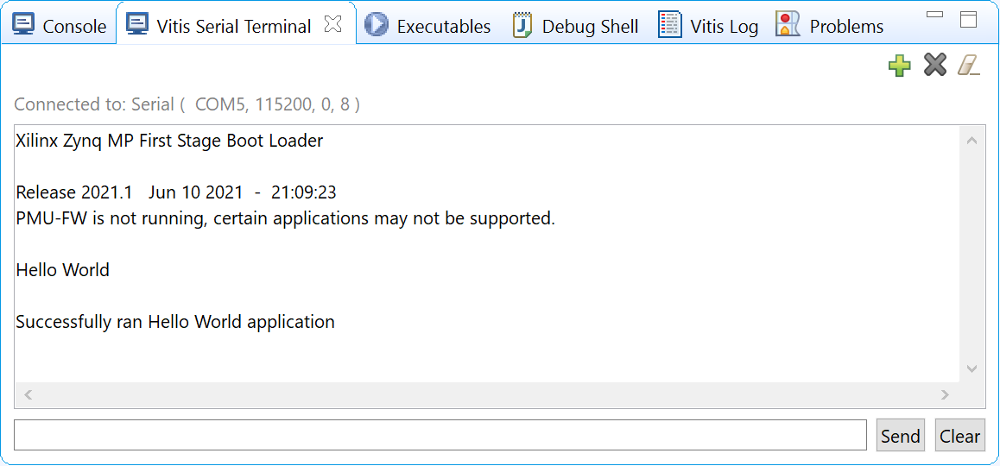
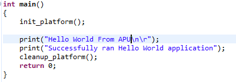
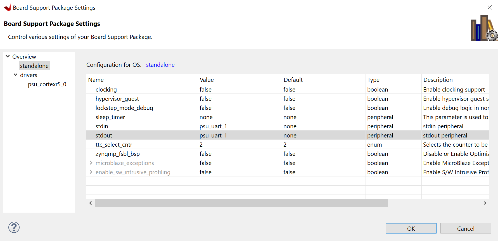

This chapter lists the steps to configure and build software for PS subsystems.
In the previous chapter, Zynq UltraScale+ MPSoC Processing System Configuration, you created and exported
the hardware design from Vivado. The exported XSA file contains the hardware handoff, the processing system initialization (psu_init),
and the PL bitstream (if the hardware is exported as post-implementation). In this chapter, you will import the XSA into the Vitis™ IDE to generate software for the processing system.
You will use the Vitis IDE to perform the following tasks:
Create a platform project for the hardware XSA. The first stage boot loader (FSBL) and PMU firmware for the PMU (platform management unit) will be created as boot components in this platform project.
Create bare-metal applications for the application processing unit (APU).
Create a system project for the APU and real time processing unit (RPU).
Example 2: Creating a Platform Project Using Vitis IDE¶
In this example, we will create a platform project to extract the information from Vivado exported XSA.
The main processing units in the Zynq UltraScale+ processing system are listed below:
Real time processing unit: Dual-core Arm Cortex™-R5F MPCore processors
Graphics processing unit: Arm Mali™ 400 MP2 GPU
Platform management unit (PMU): Xilinx MicroBlaze™ based platform management unit
The platform project reads in hardware information from the XSA file and contains the runtime environment for the above processing units.
Application software can link against the libraries generated in the platform project.
If the directory doesn’t exist, the Vitis software platform will create it.
In the Vitis IDE, go to File → New → Platform Project.
In the Create New Platform page, enter the platform name zcu102_edt and click Next.
In the Platform view, go with the default tab Create from hardware
specification (XSA).
Note
Use the Select a platform from repository tab when you have a pre-built platform and you’d like to copy it to local to modify it.
Click Browse… to select the XSA file exported from previous chapter.
Select the preferred operating system, processor, and architecture.

Screen
Property
Operating System
Standalone
Processor
psu_cortexa53_0
Architecture
64-bit
Generate Boot Components
Keep it checked
Target processor to create FSBL
psu_cortexa53_0
Click Finish.
In a few minutes, the Vitis IDE generates the platform. The files that are generated are displayed in the explorer window as shown in the following figure.

There is a standalone domain in the platform under psu_cortexa53_0 processor. New applications for Cortex-A53 can link against it.
Default domains for FSBL and PMU firmware come with the platform project when Generate Boot Components is selected during application or platform project creation.
You are free to add and remove domains in the platform project.
You can customize the domain configurations.
Build the hardware by right-clicking the platform, then selecting Build Project.
The platform project is ready. You can create applications using this platform and test on zcu102 hardware.
Note
The project build process builds the standalone BSP, FSBL, and PMUFW. FSBL and PMUFW have their own BSP. The build process takes some time.
Example 3: Running the “Hello World” Application from Arm Cortex-A53¶
In this example, you will create a “Hello World” application based on the platform created in the previous example. You will learn how to
manage the board settings, make cable connections, connect to the board through your PC, and run a simple “Hello World” software application from an Arm Cortex-A53 processor in JTAG mode using the System Debugger in the Vitis IDE.
Open your preferred serial communication utility for the COM port.
Note
You can use any serial communication utility in your system. The Vitis IDE provides a serial terminal utility. We will use it throughout the tutorial; select Window → Show View → Vitis Serial Terminal in Vitis IDE to open it.
Note
In Linux, root privilege is required to use UART.
Click the + button to set the serial configuration.
No bitstream download is required for the above software application to be executed on the Zynq UltraScale+ evaluation board. The Arm Cortex-A53 quad-core is already present in the processing system. Basic initialization of this system to run a simple application is accomplised by the device initialization Tcl script.
Power cycle the board and retain the same connections and board settings for the next section.
A domain can refer to the settings and files of a standalone BSP, a Linux OS, a third-party OS/BSP such as FreeRTOS, or a component such as the device tree generator.
You can create multiple applications to run on the domain. A domain is tied to a single processor or a cluster of isomorphic processors (for example: A53_0 or A53) in the platform.
The board support package (BSP) is the support code for a given hardware platform or board that helps in basic initialization at power-up and helps software applications to be run on top of it. It can be specific to some operating systems with boot loader and device drivers.
Tip
To reset the BSP source, double-click platform.prj, select a BSP in a domain, and click Reset BSP Source. This action only resets the source files while settings are not touched. To change the target domain after application project creation, double-click the project.prj file in Explorer view. In the Application Project Settings, select Domain → Domain change option → Drop-down Domain, then select the available domains for this application.
Standalone is a simple, low-level software layer. It provides access to basic processor features such as caches, interrupts, and exceptions, as well as the basic processor features of a hosted environment. These basic features include standard input/output, profiling, abort, and exit. It is a single-threaded semi-hosted environment.
Example 4: Running the “Hello World” Application from Arm Cortex-R5¶
In this example, you will learn how to run a simple “Hello World” software application for the Arm Cortex-R5F processor in the JTAG mode
using System Debugger in the Vitis IDE.
The application for Cortex-R5F needs a domain for cortexr5_0. You will create it in the zcu102_edt platform and reuse it for the new
application. You will create the Cortex-R5F application with the updated zcu102_edt platform.
The hardware setup and serial console connection is the same as in Example 2.
In this step, you will prepare for the next example design: running a “Hello World” application on Arm Cortex-R5. The first step is to create a standalone BSP domain for cortexr5_0 by performing the following steps:
Double-click platform.spr. The platform opens in the Explorer view.
Click in the top-right corner to add a domain .
Create a domain with the following settings:
System Properties
Setting or Command to Use
Name
standalone_r5
Display name
standalone_r5
OS
Standalone
Version
Standalone (7.3)
Processor
psu_cortexr5_0
Supported Runtime
C/C++
Architecture
32-bit
The Vitis IDE creates a new domain and standalone_r5 appears under the zcu102_edt platform.
The edt_zcu102_wrapper platform is, by default, assigned the default domain for psu_cortexa53_0. You created a new domain for cortexr5_0 in this platform..
Creating a “Hello World” Application on Arm Cortex-R5F¶
Select File → New → Application Project. The Create New Application Project wizard welcome screen opens.
Click Next.
Use the information in the table below to make your selections in the wizard screens.
Screen
System Properties
Settings
Platform
Select platform from
repository
zcu102_edt
Application project
details
Application project
name
hello_r5
System project name
hello_r5_system
Target processor
psu_cortexr5_0
Domain
Domain
standalone_r5
Templates
Available templates
Hello World
The Vitis IDE creates the hello_r5_system project in the Explorer view. hello_r5 sits inside hello_r5_system.
Select hello_r5_system and click the hammer icon in the toolbar to build the system project.
Running the “Hello World” Application on Arm Cortex-R5F¶
Right-click hello_r5 and select Run as → Run Configurations.
Right-click Xilinx Application Debugger and click New Configuration.
The Vitis IDE creates the new run configuration, named Debugger_hello_r5-Default. The configurations associated with the application are pre-populated in the Main page of the launch configurations.
Click the Target Setup page and review the settings.
This file is exported when you create the platform using the Vitis IDE; it contains the initialization information for the processing
system.
Click Run.
“Hello World” appears on the serial communication utility in Terminal 1, as shown in the following figure.

Because the “Hello World” applications for Cortex-A53 and Cortex-R5F are identical, they cannot be differentiated based on the print
contents, but you can view the details in the Debug Perspective.
If you view the XSCT console, it shows the XSCT command history as shown in the following example:
More debugging techniques are explored in the next chapter.
Note
No bitstream download is required for the above software application to be executed on the Zynq UltraScale+ evaluation board. The Arm Cortex-R5F dual core is already present on the board. Basic initialization of this system to run a simple application is accomplished by the FSBL application.
Example 5: Using System Project to Manage Multiple Applications in the Vitis IDE¶
The Vitis IDE can organize application projects that need to run at the same time in one system project. This can be useful in project
organization and can make debugging easier when the Arm Cortex-A53, Arm Cortex-R5F, or MicroBlaze soft processors need to run simultaneously.
In this example, you will create a hello_system project that contains the “Hello World” application for Arm Cortex-A53 and Cortex-R5F
and you will achieve the following:
Select File → New → Application Project. The Create New Application Project wizard welcome screen opens.
Click Next.
Use the information in the table below to make your selections in the wizard screens.
Screen
System Properties
Settings
Platform
Select platform from
repository
zcu102_edt
Application project
details
Application project
name
hello_sys_a53
System project name
hello_system
Target processor
psu_cortexa53_0
Domain
Domain
standalone on
psu_cortexa53_0
Templates
Available templates
Hello World
Note
Application projects in one workspace cannot have the same name even if they belong to different system projects, because they store flat in the workspace directory.
Modifying the hello_sys_a53 Application Source Code¶
Open the helloworld.c source file for the hello_sys_a53 application.
In the Explorer view, double-click helloworld.c in hello_sys_a53 → src.
Modify the arguments in the print command, as shown below.
Print("Hello World from APU\n\r");

Save the changes:
Press Ctrl + S, or click the save icon on the toolbar.
Build the hello_a53 application:
Right-click the hello_sys_a53 application and select Build Project.
Alternatively, it can be done by clicking the save button on the toolbar.
Verify that the application is compiled and linked successfully:
The console window report looks like the following:
'Finished building target: hello_sys_a53.elf'' ''Invoking: ARM v8 Print Size'aarch64-none-elf-sizehello_sys_a53.elf|tee"hello_sys_a53.elf.size"textdatabssdechexfilename3021220482067652936cec8hello_sys_a53.elf'Finished building: hello_sys_a53.elf.size'
The hello_sys_a53.elf file is generated in the hello_sys_a53 → Debug folder.
Creating a Custom Bare-Metal Application for an Arm Cortex-R5F Based RPU in the Same System Project¶
You will now create a bare-metal application for Arm Cortex-R5F. The application source files are provided in the ref_files/example5
directory. They will be imported in the next steps.
Create an empty bare-metal application for Cortex-R5F Core 0 in the hello_system system project:
In the Explorer View, select hello_system, right-click it, and select Add Application Project to open the New Project wizard.
Use the information in the following table to make your selections in the wizard.
Screen
System Properties
Settings
Application project
details
Application project
name
testapp_r5
System project name
hello_system
Show all processors
in hardware
specification
unchecked
Target processor
psu_cortexr5_0
Domain
Domain
standalone_r5
Templates
Available templates
Empty application(C)
Click Finish. The New Project wizard closes and the Vitis IDE creates the testapp_r5 application project in the hello_system system project.
Import the prepared source code for testapp_r5:
In the Explorer view, expand the hello_system project to find the testapp_r5 project.
Right-click the testapp_r5 and select Import Sources to open the Import view.
When two applications needs to run at the same time, they cannot use resources in conflict. They should not each other’s memory space. They should use their own peripherals, or share peripherals by time. In this step, memory space is assigned by updating the linker scripts.
In the Explorer view, expand the testapp_r5 project.
In the src directory, double-click lscript.ld to open the linker script for this project.
In the linker script, in Available Memory Regions, modify the following attributes for psu_r5_ddr_0_MEM_0:
Base Address: 0x70000000
Size: 0x10000000
The linker script modification is shown in following figure. The following figure is for representation only. Actual memory regions might vary in the case of isolation settings.
This modification in the linker script ensures that the RPU bare-metal application resides above 0x70000000 base address in the
DDR, and occupies no more than 256 MB of size.
Press Ctrl + S to save the changes.
Right-click the testapp_r5 project and select Build Project.
Verify that the application is compiled and linked successfully, and that the testapp_r5.elf file has been generated in the testapp_r5/Debug folder.
Modifying the Board Support Package for testapp_r5¶
The ZCU102 Evaluation kit has a USB-TO-QUAD-UART Bridge IC from Silicon Labs (CP2108). This enables you to select a different UART port for applications running on Cortex-A53 and Cortex-R5F cores. For this example, let Cortex-A53 use the UART 0 by default, and send and receive RPU serial data over UART 1. This requires a small modification in the standalone_r5 bsp configuration.
Open the platform details tab by double-clicking zcu102_edt → platform.spr.
Open the standalone domain BSP setting details for Cortex-R5F:
Navigate to psu_cortexr5 → standalone_r5 → Board Support Package.
Click Modify BSP Settings.
Change the UART settings for standalone_r5:
Select the Standalone tab.
Change stdin to psu_uart_1.
Change stdout to psu_uart_1.

Click OK.
Build the psu_cortexr5_0 domain and the testapp_r5 application.
Verify that the application is compiled and linked successfully and that the testapp_r5.elf has been generated in the testapp_r5/Debug folder.
Running the hello_system System Project on Hardware¶
Set up the board as in Example Project 1:
Connect the power and USB cables for UART and JTAG.
Set the boot mode to JTAG boot mode.
Power on.
Connect the serial console for UART-0 and UART-1:
Use the MobaXterm utility to connect multiple UART ports.
Open USB UART Interface-0 for UART-0 for APU.
Open USB UART Interface-1 for UART-1 for RPU.
Run hello_system on hardware by right-clicking hello_system in the Explorer window, and selecting Run As → Launch Hardware.
The message from MobaXterm shows prints from the APU and RPU.
The platform creates boot components by default. The generated FSBL has been used to initialize the running environment before launching “Hello World” applications. You can review their settings and modify the configuration if required.
To review the FSBL in the platform, follow these steps:
In the Explorer view, navigate to zynqmp_fsbl by expanding the zcu102_edt platform to see the FSBL source code. You can edit this source for customizations. Build the platform after code modification.
The platform-generated FSBL is involved in PS initialization while launching standalone applications using JTAG.
This FSBL is created for the psu_cortexa53_0, but you can also re-target the FSBL to psu_cortexr5_0 using the re-target to psu_cortexr5_0 option in the zynqmp_fsbl domain settings.
The zynqmp_fsbl domain is created automatically if bootloader creation is enabled during platform creation.
To review the PMU firmware in the platform, follow these steps:
In the Explorer view, navigate to zynqmp_pmufw by expanding the zcu102_edt platform to see the PMUFW source code.
The zynqmp_pmufw software project contains the source code of the PMU firmware for psu_pmu_0. Compile and run the firmware on psu_pmu_0.
The psu_pmu_0 processor domain is created automatically for the zynqmp_pmufw software project if bootloader creation is enabled during platform creation.
In the next chapter, you will learn about debugging standalone applications with the Vitis Debugger.


 .
.